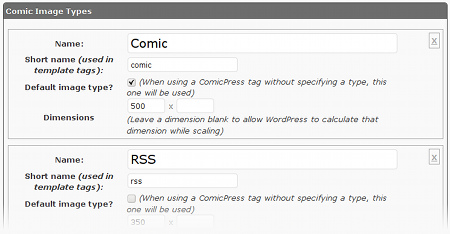
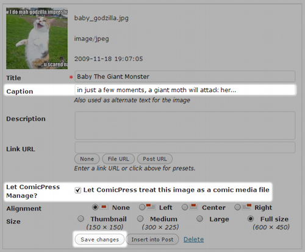
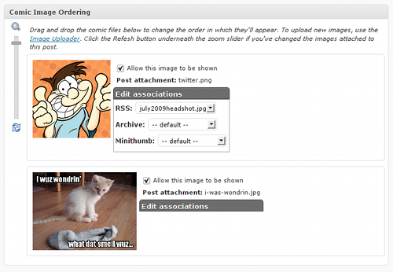

 On webcomic websites, the comic image or images for a post typically have additional images associated to them — images for the archive pages, for nagivation, and for RSS feeds are common. These images usually have set widths and/or heights so that they fit in with the layout of each page. You can set these dimensions, as well as other important properties, on the ComicPress theme options page under Comic Image Types. In a default ComicPress Core install, the following properies of each image are modifyable:
EM() tag, the string used to access that particular image of a comic.EM(), this is the image to show. There must always be a default image.Other backends — ways of accessing different data sources beyond post attachments — may provide additional options in the future.
You can add an infinite number of image types to your site, but you need at least one to be able to use ComicPress, even if you never embed any images.
 ComicPress Core's standard method of storing comic images uses the Media Uploader under Edit Post. This is the way you normally upload images for inserting into your posts, except now, you have an additional option to enable so that ComicPress knows to treat an uploaded image as a comic image.
After uploading an image, check Let ComicPress treat this image as a comic media file. This will enable ComicPress management of the file.
<img title> hovertext, a common way to add an additional punchline or comment to a comic, can be added on the Caption line.
If not empty, it will automatically be inserted in the correct way into the image tag.
When done, click Save changes rather than Insert into Post. Save changes will not close the popup window, so you can upload multiple images in one session.

Once images are attached to a post, you can arrange them and associate sub-image types (such as RSS and Archive images) to their parent image.
The order in which images are sorted determines how they are returned by the M() function, and attaching new sub-images to a parent
image causes that attached image to replace the original in calls to EM().
To make them easier you see, you can adjust the image thumbnail size using the zoom slider on the left.
If you attach new images using the Media Uploader, click the Refersh button to reload the ordering. Any changes not saved via Update post will be lost.
The options shown are with the post attachment backend. Different backends may offer additional options from the ones presented here.